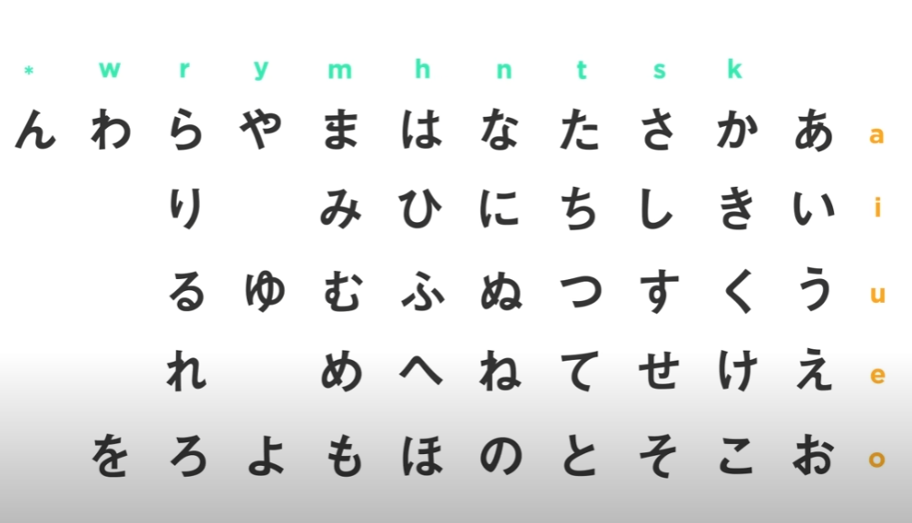

ITASHA MODI
4 min read · Oct 13, 2023
Hi everyone!👋 Today I’m going to talk about why you should learn Japanese.
I recently attended a pre-placement talk with Zenken India from Mr. Abhishek sir for the final year B. tech students for an opportunity to learn the Japanese language and work in Japan. I was inspired by the talk and decided to write a blog post about it.
Learning a new language is a fascinating adventure. It is a journey full of excitement, enthralling experiences, occasional challenges, vivid illustrations, unusual and unexpected encounters. The countless benefits of acquiring a new language are undeniable. Of all the in-demand foreign languages, why choose Japanese?
Here are three compelling reasons:
If you’re interested in learning Japanese, here are a few tips:
Here are some of the things I learned about the Japanese language
I’m excited to start learning Japanese, and I hope that you will too! It is a beautiful and challenging language, and it is a valuable skill to have.
Hiragana🏯
Hiragana is the most extensively used, due to its Japanese origins as well as the language’s grammatical structure.
Japanese, like the English alphabet, includes five vowels:
They are also related to the matras in Hindi. Following the vowels are the remaining characters of the script, which are a mix of certain consonant sounds and the aforementioned vowels.

What does it mean? 🤔
Suppose under the column n the letters are pronounced as -
ありがとう pronounced as Arigatō means Thank you in English
I’m learning Japanese because I’m interested in Japanese culture and because I want to have a career in Japan. I’ve always been fascinated by Japanese anime, manga, and video games, and I’m eager to learn more about the country and its people. I’m also interested in working in Japan’s tech industry, which is one of the most innovative in the world.
I know that learning Japanese will be challenging, but I’m up for the challenge. I’m excited to embark on this new journey, and I hope that I can inspire others to learn Japanese as well.🎋
Thank You Abhishek sir, Shriram sir, and Mam for providing VIT Lions the opportunity.
Mata aimashō Nihon! (see you Japan)🎏